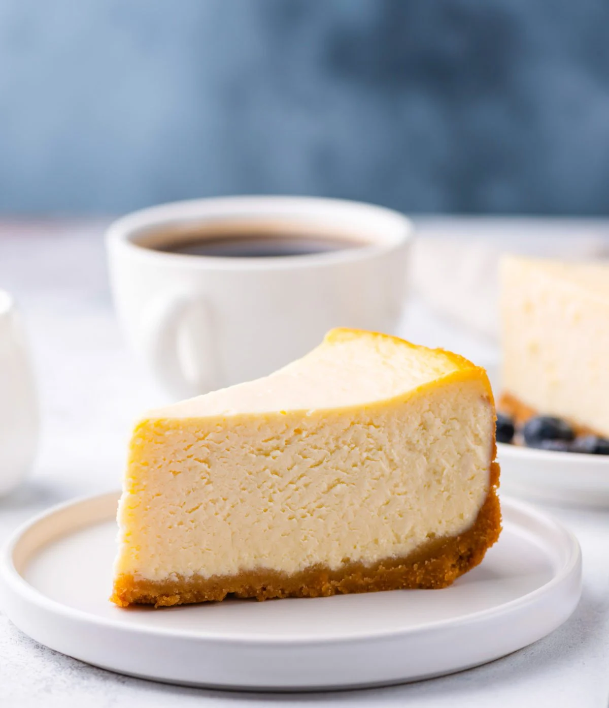

Cheesecake

Cheesecake is a sweet dessert consisting of a mixture of soft, fresh cheese, eggs, and sugar on a crust made from crushed cookies or graham crackers.
Ingredients
- 1 1/2 cups graham cracker crumbs
- 1/4 cup sugar
- 1/2 cup unsalted butter, melted
- 4 (8 ounce) packages cream cheese, softened
- 1 1/4 cups sugar
- 1 teaspoon vanilla extract
- 4 large eggs
- 1 cup sour cream
- 1/4 cup all-purpose flour
- 1 tablespoon lemon juice
Instructions
- Preheat the oven to 325°F (160°C).
- In a bowl, mix graham cracker crumbs, 1/4 cup sugar, and melted butter.
- Press the mixture into the bottom of a 9-inch springform pan.
- In a large bowl, beat cream cheese until smooth.
- Add 1 1/4 cups sugar and vanilla extract. Mix until well combined.
- Add eggs one at a time, mixing well after each addition.
- Add sour cream, flour, and lemon juice. Mix until smooth.
- Pour the cream cheese mixture over the crust in the springform pan.
- Bake for 55-60 minutes or until the center is set but still slightly jiggly.
- Turn off the oven and let the cheesecake cool in the oven with the door ajar for 1 hour.
- Refrigerate for at least 4 hours or overnight before serving.
- Enjoy your delicious cheesecake!
Go back